@niszet0 さんの “R MarkdownでWord文書を作ろう” を摘み食いしてます (以下RmdでWord本)． ちゃんとしたいずれレビューはいずれするとして，気付いたところを少しずつメモしていきたい．
さて，同書は，PlantUMLという非常に簡便な記述でシーケンス図などを書けるフレームワークに触れているが，
色々辛そう．
もうちょっと簡単にできる方法はないかな，と思ったら rkrug/plantuml パッケージを見つけたのでメモ．
pandocにplantumlを扱わせる方法もあるようなので，使い勝手のよいものを選べばいいと思う．
導入
導入には他パッケージや，PlantUML jar fileのアップデートなどいくつかステップを踏む必要がある．
library(devtools) # GitHub上のパッケージをインストールするためのパッケージ
install_github("rforge/grimport/pkg/grImport") # CRAN版のgrimportはworking directory中にtemp dirを作った後掃除してくれないらしい
devtools::install_github("rkrug/plantuml") # plantumlパッケージのインストール
library(plantuml) # plangumlパッケージのロード
updatePlantumlJar() # PlantUMLのjarファイルを最新版にするArchlinuxな当方では，これらに加えて， openjdk と graphviz を入れておく必要があった．
というかRmdでWord本でも，java環境は必要，図によってgraphvizも必要と言及されていますね．
pacman -S jre10-openjdk graphviz試す
http://plantuml.com/ に載っている図を色々試してみた．
Use Case図，Ditaa図， AsciiMathやJLaTeXMathを使った数式以外は使えるみたいだ．
vector = FALSE によりpngファイルを中間ファイルにしたり，file引数で出力をファイルに保存することも可能．
Sequence
plot(plantuml('
actor Foo1
boundary Foo2
control Foo3
entity Foo4
database Foo5
collections Foo6
Foo1 -> Foo2 : To boundary
Foo1 -> Foo3 : To control
Foo1 -> Foo4 : To entity
Foo1 -> Foo5 : To database
Foo1 -> Foo6 : To collections
'))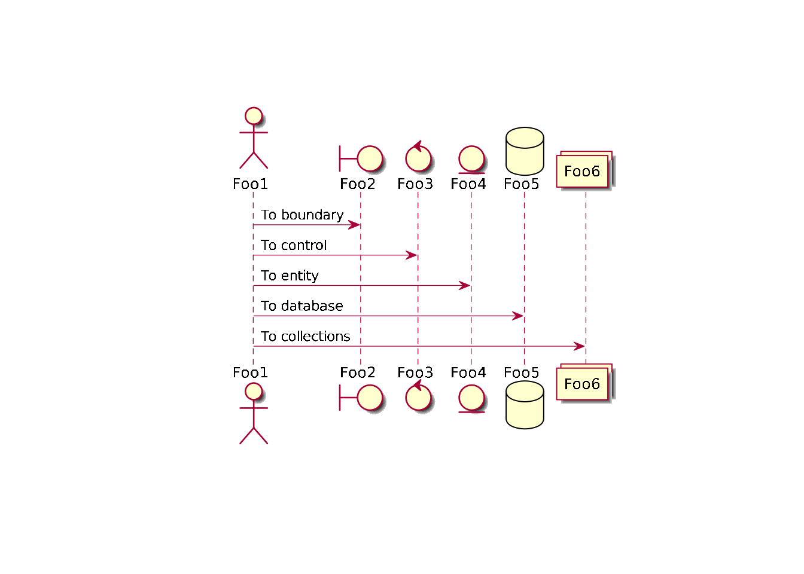
Use Case
plot(plantuml('
User -> (Start)
User --> (Use the application) : A small label
:Main Admin: ---> (Use the application) : This is\nyet another\nlabel
'))Error in polypath(trans(pathX, pathY), rule = switch(p@rule, nonzero = “winding”, : unable to allocate memory (in GPath)
Class
plot(plantuml('
Class01 <|-- Class02
Class03 *-- Class04
Class05 o-- Class06
Class07 .. Class08
Class09 -- Class10
'))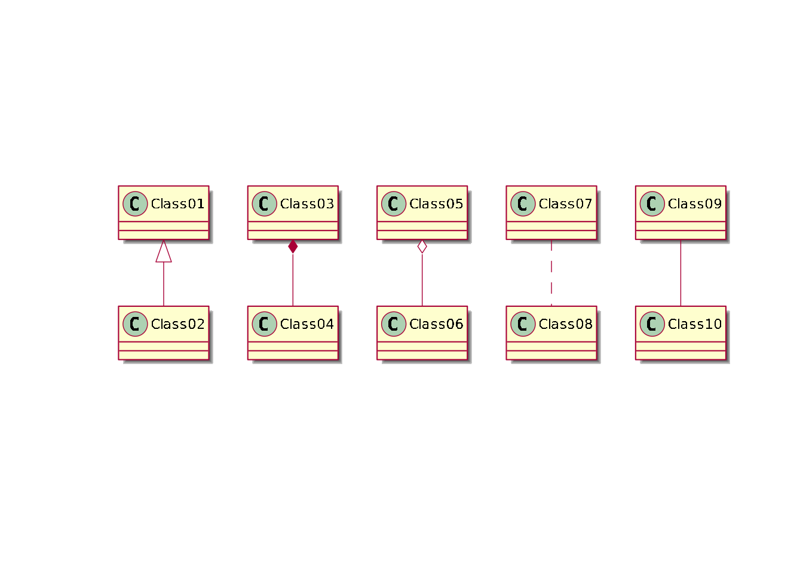
Activity
plot(plantuml('
start
if (multiprocessor?) then (yes)
fork
:Treatment 1;
fork again
:Treatment 2;
end fork
else (monoproc)
:Treatment 1;
:Treatment 2;
endif
'))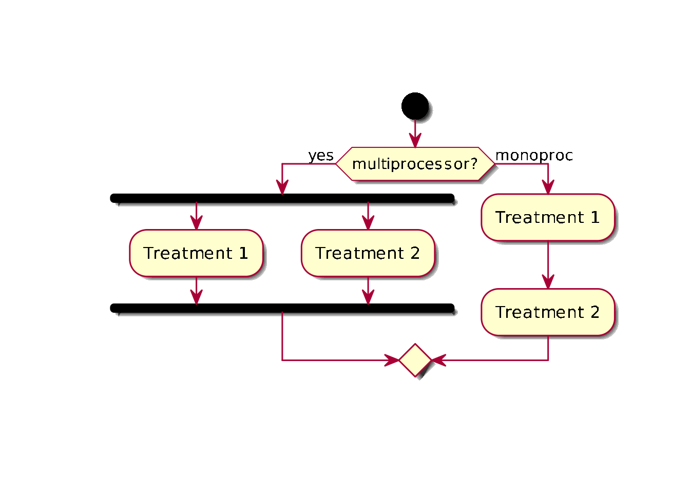
vector = FALSE で中間結果がpngに
file = hoge.png でファイルに出力
x <- list(
a = 1:10,
b = letters[1:4],
c = data.frame(
x = 1:10,
y = c(TRUE, FALSE)
)
)
plot(
as.plantuml(x)
)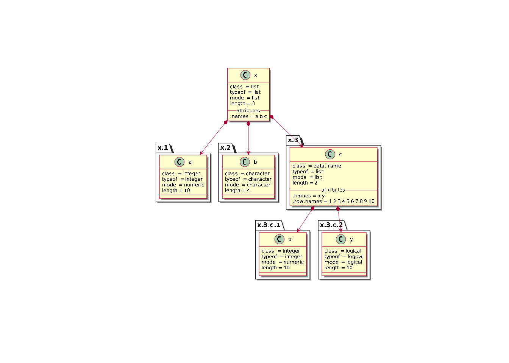
Component
plot(plantuml('
package "Some Group" {
HTTP - [First Component]
[Another Component]
}
node "Other Groups" {
FTP - [Second Component]
[First Component] --> FTP
}
cloud {
[Example 1]
}
database "MySql" {
folder "This is my folder" {
[Folder 3]
}
frame "Foo" {
[Frame 4]
}
}
[Another Component] --> [Example 1]
[Example 1] --> [Folder 3]
[Folder 3] --> [Frame 4]
'))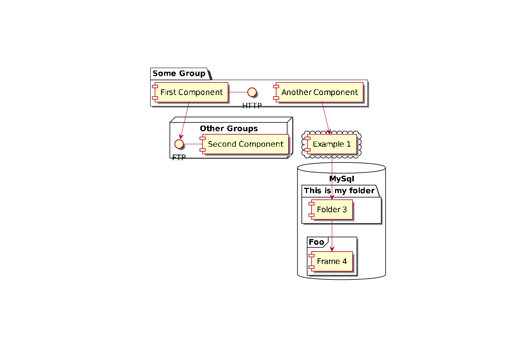
State
plot(plantuml('
scale 350 width
[*] --> NotShooting
state NotShooting {
[*] --> Idle
Idle --> Configuring : EvConfig
Configuring --> Idle : EvConfig
}
state Configuring {
[*] --> NewValueSelection
NewValueSelection --> NewValuePreview : EvNewValue
NewValuePreview --> NewValueSelection : EvNewValueRejected
NewValuePreview --> NewValueSelection : EvNewValueSaved
state NewValuePreview {
State1 -> State2
}
}
'))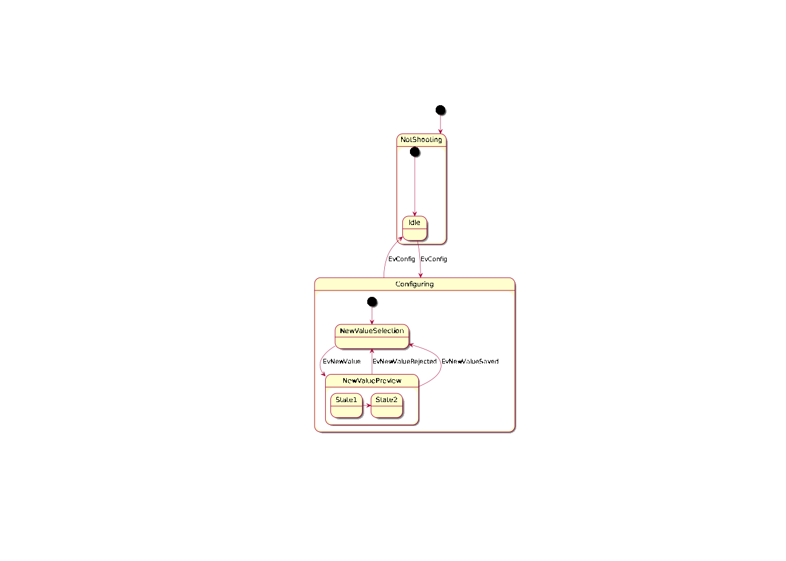
Object
plot(plantuml('
object Object01
object Object02
object Object03
object Object04
object Object05
object Object06
object Object07
object Object08
Object01 <|-- Object02
Object03 *-- Object04
Object05 o-- "4" Object06
Object07 .. Object08 : some labels
'))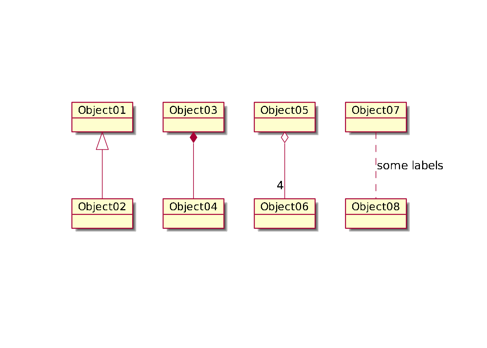
Deployment
plot(plantuml('
actor actor
agent agent
artifact artifact
boundary boundary
card card
cloud cloud
component component
control control
database database
entity entity
file file
folder folder
frame frame
interface interface
node node
package package
queue queue
stack stack
rectangle rectangle
storage storage
usecase usecase
'))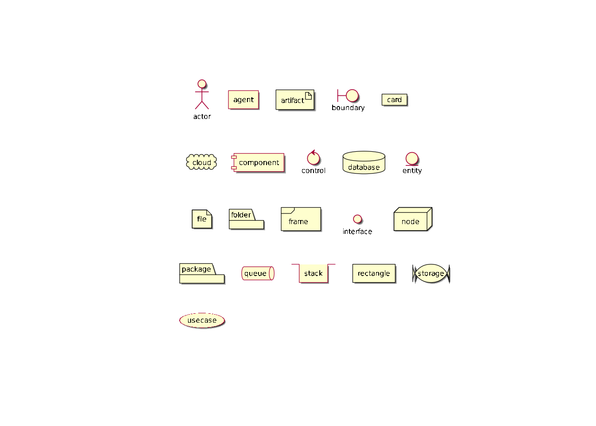
Salt
plot(plantuml('
salt
{
Just plain text
[This is my button]
() Unchecked radio
(X) Checked radio
[] Unchecked box
[X] Checked box
"Enter text here "
^This is a droplist^
}
'))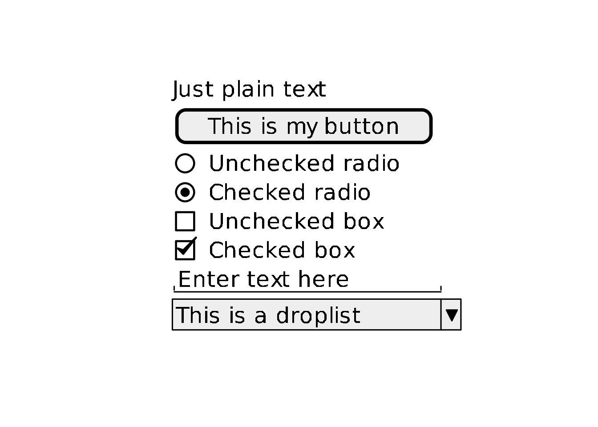
Archimate
plot(plantuml('
!define Junction_Or circle #black
!define Junction_And circle #whitesmoke
Junction_And JunctionAnd
Junction_Or JunctionOr
archimate #Technology "VPN Server" as vpnServerA <<technology-device>>
rectangle GO #lightgreen
rectangle STOP #red
rectangle WAIT #orange
GO -up-> JunctionOr
STOP -up-> JunctionOr
STOP -down-> JunctionAnd
WAIT -down-> JunctionAnd
'))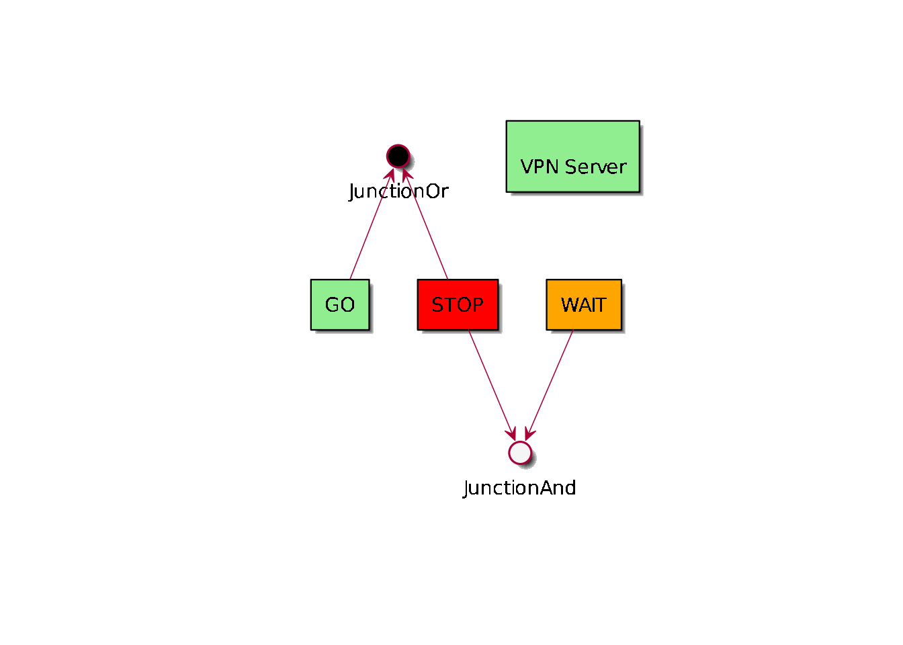
Ditaa
plot(plantuml('
+--------+ +-------+ +-------+
| +---+ ditaa +--> | |
| Text | +-------+ |diagram|
|Document| |!magic!| | |
| {d}| | | | |
+---+----+ +-------+ +-------+
: ^
| Lots of work |
+-------------------------+
'))Error in polypath(trans(pathX, pathY), rule = switch(p@rule, nonzero = “winding”, : unable to allocate memory (in GPath)
Gantt
plot(plantuml("
[Prototype design] lasts 13 days and is colored in Lavender/LightBlue
[Test prototype] lasts 9 days and is colored in Coral/Green and starts 3 days after [Prototype design]'s end
[Write tests] lasts 5 days and ends at [Prototype design]'s end
[Hire tests writers] lasts 6 days and ends at [Write tests]'s start
[Init and write tests report] is colored in Coral/Green
[Init and write tests report] starts 1 day before [Test prototype]'s start and ends at [Test prototype]'s end
"))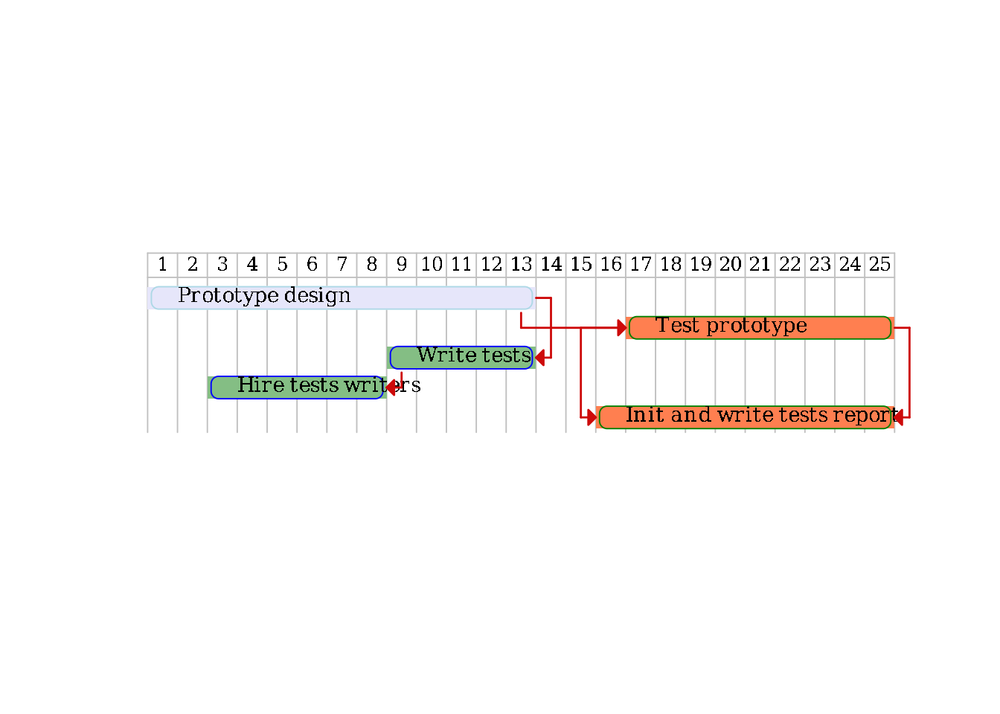
数式……
plot(plantuml('
:<math>int_0^1f(x)dx</math>;
:<math>x^2+y_1+z_12^34</math>;
note right
Try also
<math>d/dxf(x)=lim_(h->0)(f(x+h)-f(x))/h</math>
<latex>P(y|\\mathbf{x}) \\mbox{ or } f(\\mathbf{x})+\\epsilon</latex>
end note
'))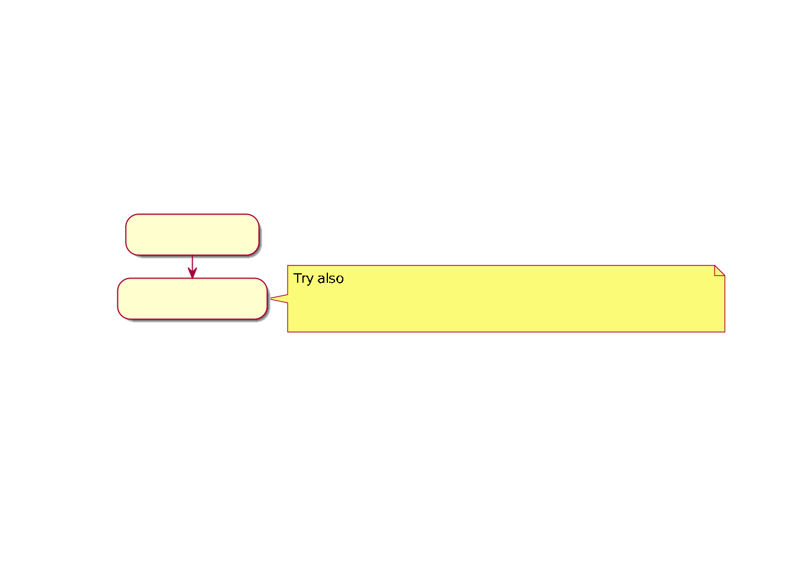